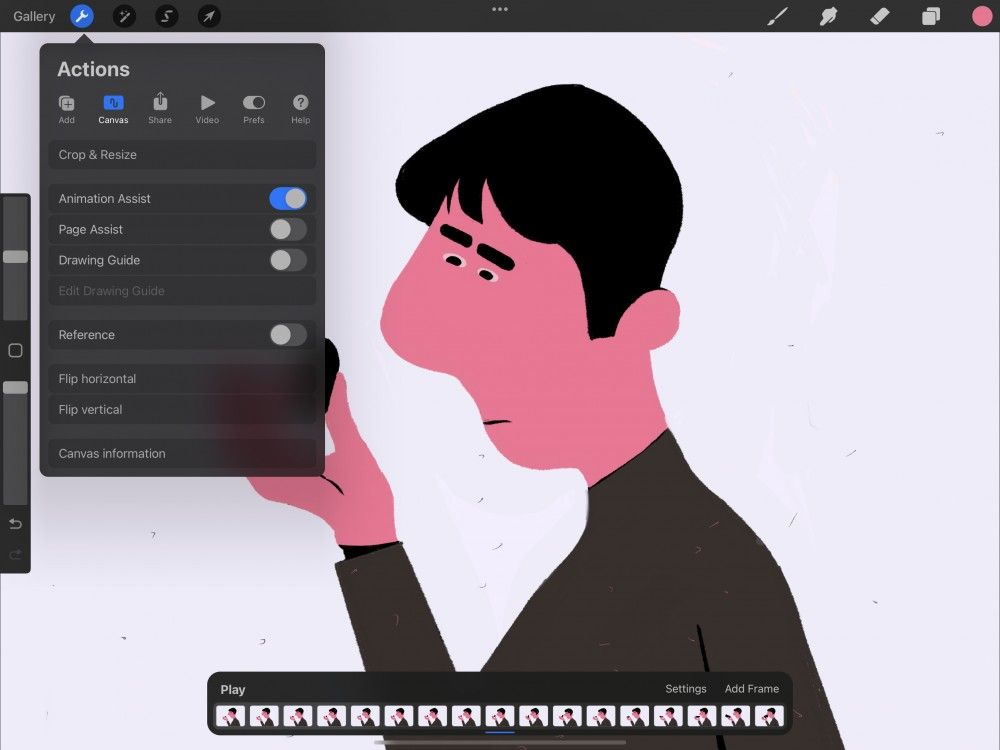

📖 Đã dịch sang tiếng Việt. Thuật ngữ chuyên môn giữ tiếng Anh — rê chuột để xem nghĩa (tooltip).
Interface and Basics
Làm chủ hoạt hình với các công cụ motion graphics (đồ họa chuyển động) chuyên nghiệp trong giao diện gọn gàng và đơn giản.
Kích hoạt
Gọi giao diện Animation Assist.

Chạm nút hình cái cờ lê ở góc trên bên trái màn hình để mở menu Actions. Chạm Canvas (khung vẽ), và gạt công tắc Animation Assist (trợ lý hoạt hình).
Giao diện Animation Assist hiện đã hoạt động.
Để thoát giao diện Animation Assist, hãy lặp lại thao tác trên.
Màn hình Animation Assist
Làm chủ hoạt hình nhanh chóng với Timeline trực quan của các frames, onion skinning (lớp hành lá) giúp theo dõi tiến độ, phát lại tức thì cùng các thiết lập linh hoạt.
Khi bạn gọi Animation Assist, màn hình sẽ thu phóng để hiển thị toàn bộ tác phẩm. Nhờ đó bạn có thể thấy trọn vẹn hoạt hình của mình.
Tất cả lớp hiện có trong tác phẩm giờ được hiển thị trong Animation Assist thành các frames trong Timeline.
Khung vẽ của bạn hiển thị frames (khung hình) hoạt hình đang chọn ở độ mờ đầy đủ.
Khi bạn mới mở Animation Assist, Onion skin frames (khung hình lớp hành lá) được bật mặc định.
Vẽ và tô lên khung vẽ như bình thường. Các thay đổi của bạn sẽ ảnh hưởng đến frames đang chọn trong Timeline.
Timeline (dòng thời gian)
Timeline thể hiện mỗi lớp hoặc nhóm lớp thành các frames của hoạt hình thông qua hình thu nhỏ.
Nó giống bảng Layers nhưng được xoay ngang. Lớp dưới cùng của bảng Layers sẽ là frames nằm tận cùng bên trái trong Timeline. Điều này thể hiện các frames theo thứ tự thời gian từ trái sang phải.
Bạn có thể di chuyển trong Timeline theo vài cách:
- Chạm một frames để nhảy đến nó
- Kéo Timeline qua lại
- Hất Timeline để cuộn nhanh
- Frames đang chọn được gạch chân màu xanh.
Pro Tip
If you require multiple objects in a single frame of your animation you can use grouped layers Grouped layers are treated as a single frame in the Timeline. To find out more about organizing layers and groups, check out the Organize section of Layers in this Handbook.
Phát/Tạm dừng
Phát lại trực tiếp cho phép bạn xem trước hoạt hình mà không làm gián đoạn quy trình.
Để xem trước hoạt hình, hãy chạm Play (phát). Bạn có thể dừng phát lại bằng cách chạm khung vẽ, Timeline, hoặc chạm Pause (tạm dừng).
Thêm Frame
Thêm một frames trắng vào hoạt hình.
Chạm Add Frame (thêm khung) bất cứ lúc nào để thêm một frames trắng kế frames hiện tại trong Timeline.
Tùy chọn Frame
Chạm bất kỳ frames nào để mở các tùy chọn riêng của frames đó.
Menu Frame Options cung cấp nhiều thiết lập áp dụng cho từng frames riêng biệt. Nhân đôi (Duplicate), xóa (Delete), hoặc điều chỉnh Hold Duration (thời gian giữ) trên một frames.
Still have questions?
If you didn't find what you're looking for, explore our video resources on YouTube or contact us directly. We’re always happy to help.